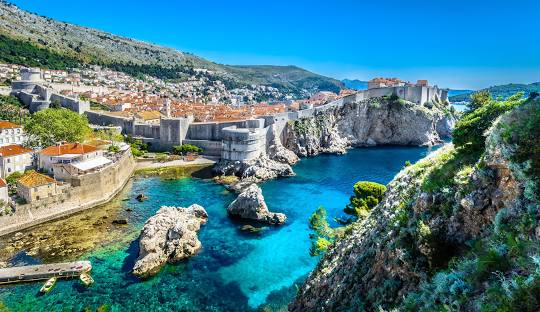
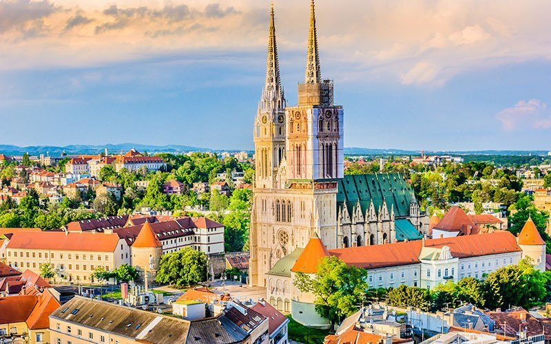

Major Historical Events
1 / 3

Dubrovnik - A historical city with significant importance
2 / 3

Diocletian's Palace in Split
3 / 3

Zagreb Cathedral
Population, Languages, and Religions
| Category | Details |
|---|---|
| Population | 4.05 million (2023 estimate) |
| Languages Spoken | Croatian (official), Serbian, Italian, Hungarian, Czech, Slovak, and German |
| Religions | Roman Catholic (86.3%), Orthodox (4.4%), Muslim (1.5%), Protestant (0.3%), other (0.9%), unspecified (2.5%), none (4.1%) |
Major Wars
- Medieval Croatian Kingdom (925–1102)
- Ottoman Wars in Europe (15th-19th centuries)
- World War I (1914–1918)
- World War II (1939–1945)
- Croatian War of Independence (1991–1995)